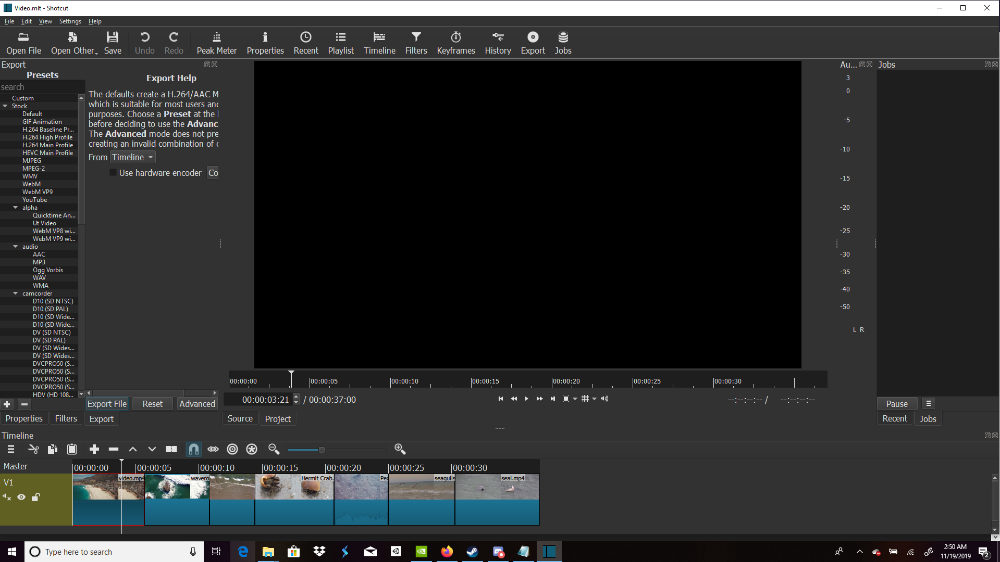

The story begins with several overhead shots of the beach and the water. Then it cuts to a wave that contains a small hermit crab. After that it shows other wildlife in the area, specifically the fish and seagulls. It ends with one of the seagulls flying down and attacking a nearby seal.

Sources: